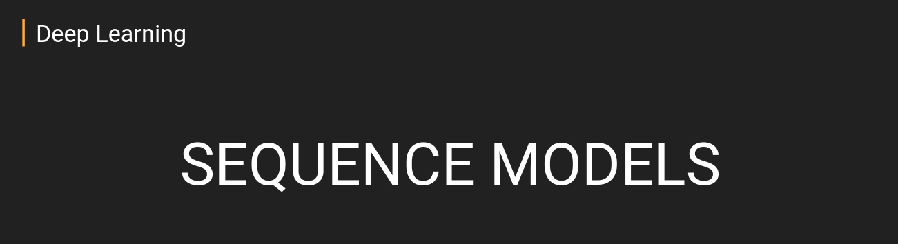
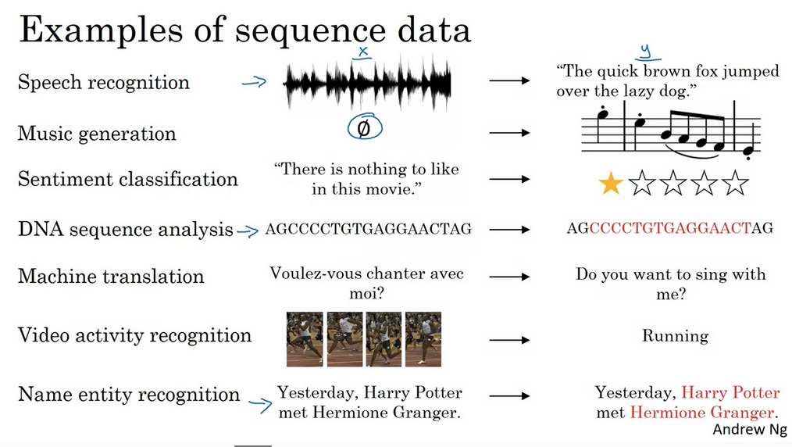

Sequence Models
How models handle ordered data like text, from RNNs and LSTMs to transformers and LLMs.

Table of Content
History of Large Language Model
The term "Large Language Model" (LLM) refers to a class of artificial intelligence models designed for natural language understanding and generation tasks. The history of LLMs is closely tied to the development and advancement of deep learning and neural network-based models for language processing. Here's a brief history of LLMs:
| Architect | Details |
|---|---|
| Early Neural Networks (1940s-1950s) | The history of neural networks dates back to the 1940s and 1950s when researchers first proposed simple computational models inspired by the human brain's neurons. These early models were rudimentary and lacked the depth and complexity seen in modern LLMs. |
| Connectionist Models (1980s-1990s) | The 1980s and 1990s saw the emergence of connectionist models, including the development of recurrent neural networks (RNNs) and feedforward neural networks. These models showed promise in natural language processing tasks but were limited by their architecture and the available computational resources. |
| Recurrent Neural Networks (RNNs) | RNNs, introduced in the 1980s, marked an important step in sequence modeling. They had the ability to capture sequential dependencies in text, making them suitable for tasks like language modeling and text generation. |
| Word Embeddings (Word2Vec, GloVe) | In the early 2010s, word embeddings like Word2Vec and GloVe gained popularity. These techniques represented words as continuous vectors in a lower-dimensional space, enabling semantic relationships to be captured. Word embeddings served as pre-trained representations for downstream language tasks. |
| Introduction of LSTMs (Late 1990s, Early 2000s) | Long Short-Term Memory (LSTM) networks, introduced by Hochreiter and Schmidhuber in the late 1990s, addressed some of the vanishing gradient problems in RNNs. LSTMs became instrumental in sequence-to-sequence tasks and improved the performance of language models. |
| Deep Learning Renaissance (2010s) | The 2010s witnessed a resurgence of interest in deep learning, driven by advancements in hardware (e.g., GPUs) and large-scale labeled datasets. This period saw the development of deep neural networks for various language tasks, including machine translation, sentiment analysis, and text classification. |
| Transformer Architecture (2017) | The introduction of the Transformer architecture in the paper "Attention Is All You Need" by Vaswani et al. in 2017 marked a significant breakthrough in natural language processing. The Transformer's self-attention mechanism allowed for parallel processing of sequential data, making it highly efficient and effective for tasks like machine translation. |
| BERT (2018) | Bidirectional Encoder Representations from Transformers (BERT), introduced by Google AI in 2018, revolutionized the field of NLP. BERT-based models achieved state-of-the-art performance on a wide range of language understanding tasks. BERT demonstrated the power of pre-trained language representations. |
| GPT-2 and GPT-3 (2019) | OpenAI's Generative Pre-trained Transformer (GPT) models, starting with GPT-2 in 2019 and followed by GPT-3, pushed the boundaries of LLMs. GPT-3, in particular, demonstrated remarkable language generation capabilities and garnered widespread attention. |
| Continued Advancements | Since GPT-3, the development of LLMs has continued with even larger models, such as GPT-4 and successors. These models are applied to tasks like text generation, question answering, summarization, and more. |
The history of LLMs reflects the evolution of deep learning and its impact on natural language understanding and generation. LLMs have become integral to various applications, from chatbots and virtual assistants to content generation and language translation. Researchers and organizations continue to explore ways to make LLMs more powerful, efficient, and capable.
Examples of Sequence Data

Different between NLP and LLM
Large Language Models (LLMs) and Natural Language Processing (NLP) are related concepts, but they represent different aspects of the field of natural language understanding and language technology. Here are the key differences between LLM and NLP:
| Key | Difference |
|---|---|
| Definition | LLM (Large Language Model): LLM refers to a specific type of artificial intelligence model, often based on the Transformer architecture, that is trained on large amounts of text data to perform various language-related tasks. LLMs are a subset of NLP models but have gained significant attention due to their remarkable capabilities.</br></br>NLP (Natural Language Processing): NLP is a broader field that encompasses the study and development of algorithms and techniques for processing, understanding, and generating human language by computers. It includes various tasks and technologies, including but not limited to LLMs. |
| Scope | LLM: LLMs are a specific type of NLP model. They are characterized by their large parameter sizes and pre-training on vast corpora of text data, which enables them to excel at a wide range of NLP tasks.</br></br>NLP: NLP covers a wide range of topics and techniques beyond just LLMs. It includes tasks such as text classification, sentiment analysis, machine translation, information retrieval, speech recognition, and more. NLP also involves the development of linguistic resources, tools, and algorithms. |
| Technology vs. Field | LLM: LLM refers to the technology or model itself. It represents a specific approach to solving NLP tasks using large neural networks.</br></br>NLP: NLP is the broader field of study that encompasses research, development, and application of technologies and methods for natural language understanding and generation. It includes traditional rule-based methods, statistical approaches, and modern deep learning techniques like LLMs. |
| Use Cases | LLM: LLMs are primarily used as powerful tools for various NLP tasks. They can be fine-tuned for specific applications, such as text generation, question answering, summarization, and more.</br></br>NLP: NLP encompasses a wide range of real-world applications, including chatbots, virtual assistants, language translation services, sentiment analysis in social media, medical record analysis, and many others. |
| Development Focus | LLM: LLM development often focuses on the architecture, scale, and training methods of large neural networks. Recent advancements have been driven by scaling up model sizes.</br></br>NLP: NLP research and development involve a broader set of concerns, including linguistics, data preprocessing, evaluation metrics, and domain-specific challenges. |
In summary, LLMs are a specific subset of NLP models that have gained prominence due to their size and capabilities. NLP, on the other hand, is a larger field that encompasses various technologies and approaches to work with human language in computational systems. LLMs are a powerful tool within the domain of NLP, but NLP itself is a multidisciplinary field with diverse applications and research areas.